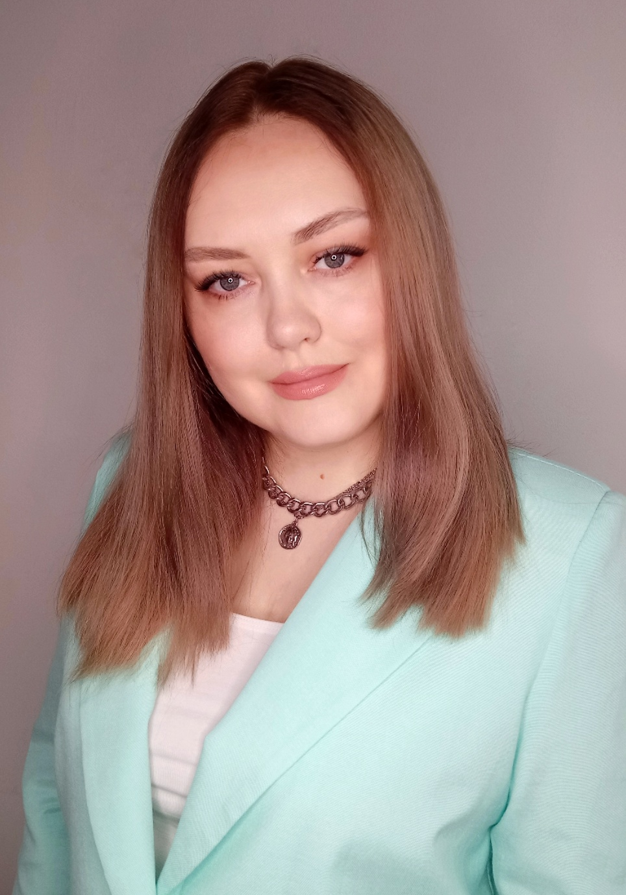

Специалист по PR и журналист с более чем 10-летним опытом работы.
За это время я сотрудничала с ведущими федеральными СМИ, что позволило мне получить глубокие знания и понимание медийной индустрии.
Имею опыт в разработке и реализации маркетинговых стратегий.
Обладаю навыками анализа рынка и целевой аудитории.
Также имею опыт работы с различными инструментами PR и медиа, такими как пресс-релизы, медиа-киты, интервью, публикации в социальных сетях и др.
Одним из моих ключевых навыков является умение находить истории, которые заинтересуют как журналистов, так и аудиторию. Я стремлюсь создавать контент, который будет привлекательным,
информативным и позволит достичь поставленных целей.
На этом сайте вы сможете ознакомиться с некоторыми примерами моих работ.

DIGITAL ПОРТФОЛИО
Анна Евтушенко